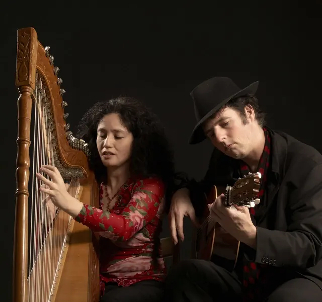

Nieuws ·
Valentijnsconcert door Claudia y Manito in de Jacobskapel

Geniet van een romantische avond met het Valentijnsconcert van Claudia y Manito in de Jacobskapel, Nijmegen, op 14 februari. Ervaar Claudia’s betoverende harpspel en Manito’s vurige gitaar, geïnspireerd door Manitas de Plata. Liefdesthema’s weerklinken in Spaanstalige liederen, perfect voor verliefde stellen of zij die liefde zoeken. Het concert begint om 20.00 uur, tickets à €15 (incl. drankje). Reserveren is aanbevolen bij deze beperkte capaciteit van 45 personen. Reserveer via info@manito.biz of bel06-23259107.
Locatie: Jacobskapel
Adres: Glashuis 4, 6511 CR Nijmegen
Aanvrang: 20:00